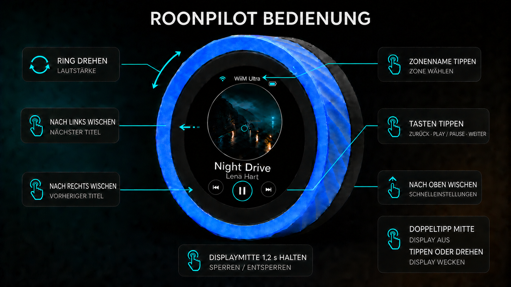

Windows
Richtig: Serielles USB-Gerät (COMx)Nicht dieser Eintrag: USB-SERIAL CH340 (COMx)
Windows-AnleitungEine schnelle, haptische Roon-Fernbedienung für das Waveshare ESP32-S3 Knob Touch LCD 1.8. Keine Bridge, keine Zusatz-App und kein zusätzlicher Dienst erforderlich.
Die Installation unterscheidet sich unter Windows und macOS. Wähle deinen Computer und sieh sofort den richtigen USB-Namen und den kurzen Ablauf.
Der richtige USB-Name unterscheidet sich je nach Betriebssystem. Nutze die passende Kurzanleitung; für die normale Installation wird kein Kommandozeilenwerkzeug benötigt.
Nicht dieser Eintrag: USB-SERIAL CH340 (COMx)
Windows-AnleitungNicht dieser Eintrag: USB serial
macOS-Anleitung01
Alles, was vor dem Öffnen des Installers benötigt wird.
Ein reines Ladekabel kann das Display versorgen, aber keine Firmware installieren.
Entweder die Windows- oder die macOS-Anleitung vollständig befolgen.
Nur mit „Serielles USB-Gerät“ unter Windows oder „USB JTAG/serial“ unter macOS fortfahren.
In Chrome oder Edge öffnen und USB bis zum Abschluss verbunden lassen.
02
Sobald der richtige USB-Name sichtbar ist, fehlen nur noch wenige Klicks.
Bei der Abfrage Erase device bestätigen. Vorher muss nichts separat gelöscht werden.
USB verbunden lassen, bis Löschen, Schreiben und Prüfen abgeschlossen sind.
Spätere Updates laufen direkt in RoonPilot unter System → Firmware update und behalten die Einstellungen normalerweise bei.
Vor dem Start jeden seriellen Monitor schließen, der die USB-Verbindung verwenden könnte.
03
Normale Updates benötigen kein USB-Kabel mehr.
RoonPilot funktioniert vollständig ohne sie. Wer diese zusätzliche Stromsparmaßnahme bewusst nutzen möchte, folgt der getrennten Companion-Anleitung.
04
Ein sauberes Factory-Abbild enthält keine privaten WLAN- oder Roon-Daten.
Mit RoonPilot-Setup-XXXXXX verbinden. Öffnet sich die Anmeldeseite nicht, 192.168.4.1 aufrufen.
Das 2,4-GHz-Netz auswählen oder eingeben und das Kennwort lokal im Gerät speichern.
Die vom Router oder Gerät angezeigte Adresse verwenden. Kein Internetkonto erforderlich.
In Roon Einstellungen → Erweiterungen öffnen und RoonPilot von Senior Coder aktivieren.
Werden mehrere Roon Server gefunden, den gewünschten wählen. Falls Discovery blockiert ist, kann eine feste lokale IP eingetragen werden.
Hauptzone festlegen und Räume ausblenden, die nicht am Gerät erscheinen sollen.
05
Schnelle physische Steuerung, eine sorgfältig gestaltete runde Oberfläche und vollständige lokale Konfiguration.

Der komplette Außenring regelt die Lautstärke. RoonPilot erkennt native Prozent-, dB- und relative Ausgänge automatisch. Tippen, Wischen oder Halten auf dem kapazitiven Display steuert Wiedergabe und Gerät.
Drehen · tippen · doppeltippen · wischen · halten
Lautstärke, Wiedergabe, Zonenwahl, Schnelleinstellungen, Bediensperre, sofortiges Display-Aus und Aufwecken sind direkt am Gerät erreichbar.
Vollständige Gerätebedienung lesen
Bild in voller Größe öffnen
Die responsive lokale Oberfläche verwaltet RoonPilot direkt im eigenen Netzwerk.

RoonPilot spricht im lokalen Netzwerk direkt mit Roon. Konfiguration, Freigabe und Steuerung bleiben lokal.
06
RoonPilot ist für das Waveshare ESP32-S3-Knob-Touch-LCD-1.8 ausgelegt, nicht für irgendein rundes ESP32-Display.
Blaue und schwarze Gehäusevarianten werden mit oder ohne Akku verkauft. Vor dem Kauf genaue Bestellnummer und regionale Akkubeschränkungen prüfen.
Waveshare-Produktseite Offizielles technisches Wiki07
Mit der Anleitung für den eigenen Computer beginnen. Technischer Hintergrund und freiwillige Rückwege bleiben getrennt.
BOOT/RESET nur verwenden, wenn die automatische USB-Verbindung scheitert. Niemals den Stecker drehen und den zweiten Prozessor auf Verdacht flashen.